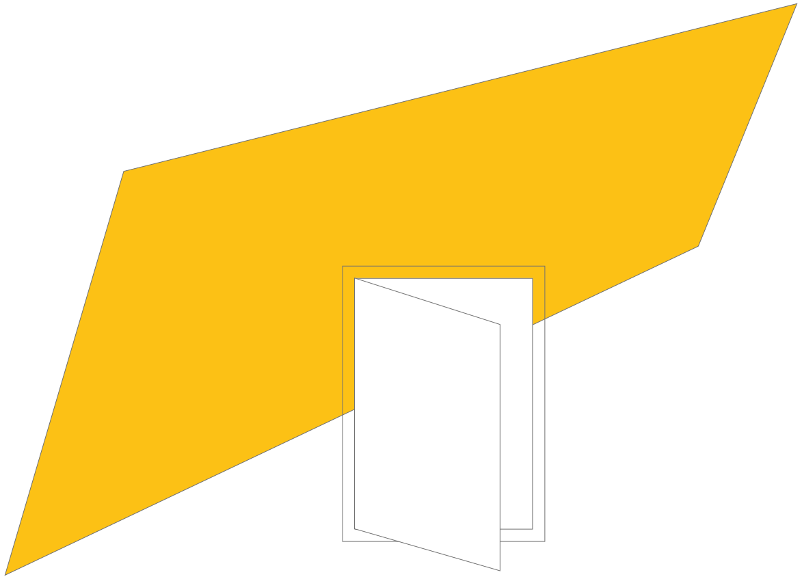

Intro
ABD? ABC bedoelt u? Kan u het niet laten om aan te passen?
Welkom in NetNiet, een aparte wereld waar de wereld net een
beetje anders loopt. Het is een wereld die perfect is op de kleine
details na. Een wereld voor perfectionisten.
0/10
U heeft voorlopig een 0 op 10, maar als u door de website gaat zal
u misschien een paar kleine details willen juister zetten of
corrigeren.
Dat lukt u door op het element zelf te klikken. Zo spaart u punten op.
Door genoeg punten op te sparen wordt u een goede kandidaat
bevonden voor de wereld NetNiet.
De geschiedenis van NetNiet
Voordat mensen naar NetNiet kwamen waren ze enorm perfectionistisch en
ergerden ze zich aan alle
kleine
details. De
details die ándere mensen maar aan zich voorbij lieten gaan, maar die zij zeer belangrijk vonden om
toch
maar goed te
krijgen. Na zich te vaak te
frustreren aan die kleine details, hebben enkelen besloten dat hiervoor
een
oplossing moest
bestaan. Een wereld waarin men kon loslaten, waarin men die
kleine
details
aan zich
voorbij
konden laten gaan.
NetNiet is de weg
NetNiet is een wereld vol kleine details niet nét niet
kloppen.
Een wereld prikkelend genoeg voor u om te willen
corrigeren, maar dat niet doet. Het is aan u om dat los te laten als u in NetNiet wilt
komen wonen.
In NetNiet hebben
mensen leren leven met de kleine details, ze geleerd te omarmen en het
perfectionisme achter zich te
laten. En nu is het
aan u! Start met de 10 geboden om je voor te bereiden.
